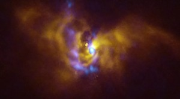
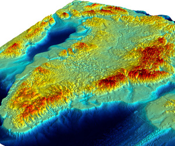

მეცნიერება
ტექნოლოგიები
NEXT საქართველო
მეცნიერება
შესაძლოა, ფსილოციბინი ანორექსიის სამკურნალოდ ეფექტიანი იყოს — კვლევა

აირის გიგანტების დაბადება — ასტრონომებმა ახალგაზრდა პლანეტური სისტემა გადაიღეს

რა არის გრენლანდიის ყინულის ქვეშ?
ტექნოლოგიები
მალე NASA საკუთარ სტრიმინგ პლატფორმას აამოქმედებს — NASA+
Facebook-ს ყოველთვიურად 3 მილიარდზე მეტი აქტიური მომხმარებელი ჰყავს
ნახეთ: Pazzi — პირველი რობოტი, რომელიც პიცას აცხობს
NEXT საქართველო
ციფრული ტრანსფორმაცია, DevOps, კიბერუსაფრთხოება და დიდი მონაცემები — როგორ ჩაიარა Change Inspire-მა
როგორ დანერგა Google Pay თიბისის ტექ გუნდმა — ის, რაც არ ვიცით
მზის სხივებიდან სუფთა ხელებამდე: ტყიბულის პირველ საბავშვო ბაღში წყალი მზის ენერგიით თბება